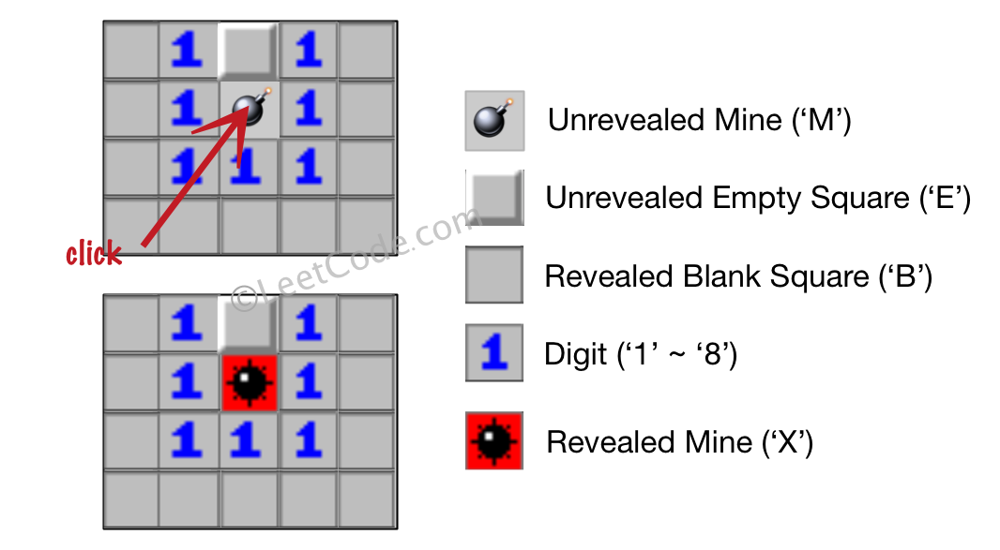

题目地址:529. 扫雷游戏
Let's play the minesweeper game (Wikipedia, online game)!
You are given a 2D char matrix representing the game board. 'M' represents an unrevealed mine, 'E' represents an unrevealed empty square, 'B' represents a ** revealed** blank square that has no adjacent (above, below, left, right, and all 4 diagonals) mines, digit ('1' to '8') represents how many mines are adjacent to this ** revealed** square, and finally 'X' represents a ** revealed** mine.
Now given the next click position (row and column indices) among all the unrevealed squares ('M' or 'E'), return the board after revealing this position according to the following rules:
- If a mine ('M') is ** revealed**, then the game is over - change it to 'X'.
- If an empty square ('E') with no adjacent mines is revealed, then change it to revealed blank ('B') and all of its adjacent unrevealed squares should be revealed recursively.
- If an empty square ('E') with at least one adjacent mine is revealed, then change it to a digit ('1' to '8') representing the number of adjacent mines.
Return the board when no more squares will be ** revealed**.
Example 1:
Input:
[['E', 'E', 'E', 'E', 'E'],
['E', 'E', 'M', 'E', 'E'],
['E', 'E', 'E', 'E', 'E'],
['E', 'E', 'E', 'E', 'E']]
Click : [3,0]
Output:
[['B', '1', 'E', '1', 'B'],
['B', '1', 'M', '1', 'B'],
['B', '1', '1', '1', 'B'],
['B', 'B', 'B', 'B', 'B']]
Explanation:

- Example 2:
Input:
[['B', '1', 'E', '1', 'B'],
['B', '1', 'M', '1', 'B'],
['B', '1', '1', '1', 'B'],
['B', 'B', 'B', 'B', 'B']]
Click : [1,2]
Output:
[['B', '1', 'E', '1', 'B'],
['B', '1', 'X', '1', 'B'],
['B', '1', '1', '1', 'B'],
['B', 'B', 'B', 'B', 'B']]
Explanation:

Note:
- The range of the input matrix's height and width is [1,50].
- The click position will only be an unrevealed square ('M' or 'E'), which also means the input board contains at least one clickable square.
- The input board won't be a stage when game is over (some mines have been revealed).
- For simplicity, not mentioned rules should be ignored in this problem. For example, you don't need to reveal all the unrevealed mines when the game is over, consider any cases that you will win the game or flag any squares.
思路：
深度优先
public class Solution {
// 坐标相邻的8个方向 上，下，左，右，左上，左下，右上，右下
private int[][] dirs = {{0,1},{0,-1},{-1,0},{1,0},{-1,1},{-1,-1},{1,1},{1,-1}};
public char[][] updateBoard(char[][] board, int[] click) {
// 获取当前坐标
int row = click[0], col = click[1];
// 边界条件
int m = board.length, n = board[0].length;
// 如果找到M（未挖出的雷）或者X（已挖出的雷）游戏结束
if (board[row][col] == 'M' || board[row][col] == 'X') {
board[row][col] = 'X';
return board;
}
// 找周边有几个雷
int num = 0;
for (int[] dir : dirs) {
int newRow = dir[0] + row;
int newCol = dir[1] + col;
// 如果周围是未被揭开的雷，周围雷的数量递增
if (newRow >= 0 && newCol >= 0 && newRow < m && newCol < n && board[newRow][newCol] == 'M') {
num++;
}
}
// 如果周围有雷
if (num > 0) {
board[row][col] = (char) (num + '0');
return board;
}
// 如果一个没有相邻地雷的空方块（'E'）被挖出，修改它为（'B'）
board[row][col] = 'B';
for (int[] dir : dirs) {
int newRow = dir[0] + row;
int newCol = dir[1] + col;
// 所有和其相邻的未挖出方块都应该被递归地揭露。
if (newRow >= 0 && newCol >= 0 && newRow < m && newCol < n && board[newRow][newCol] == 'E') {
updateBoard(board,new int[]{newRow,newCol});
}
}
return board;
}
}